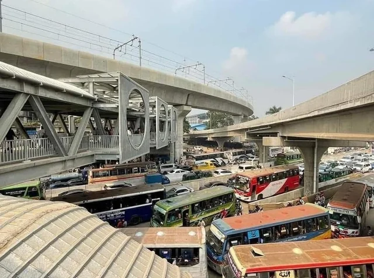
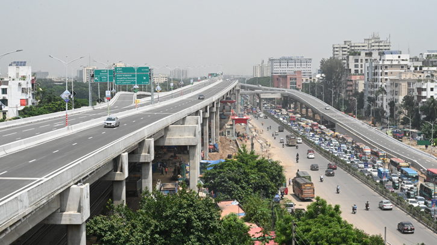
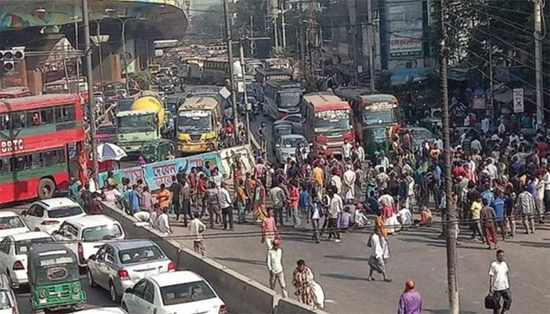
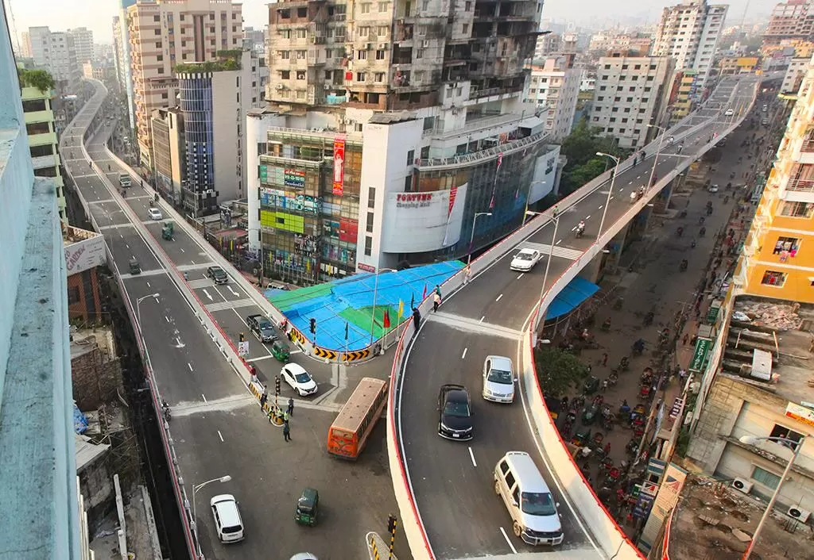
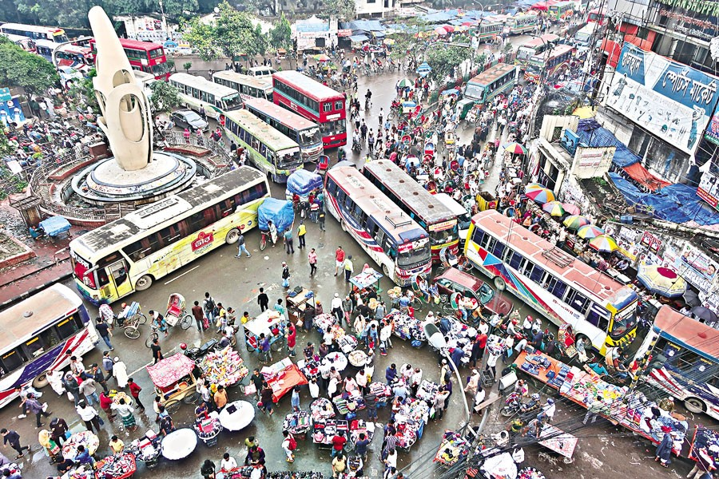
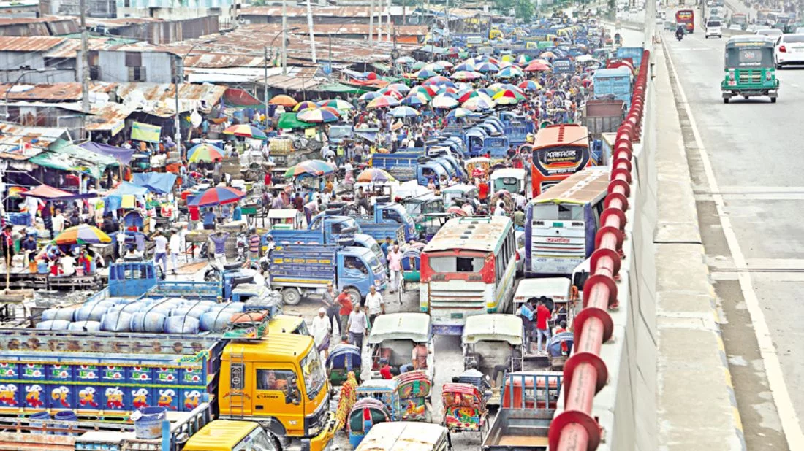

Dhaka, the capital of Bangladesh, faces some of the most severe traffic congestion in the world. One of the primary reasons is the limited allocation of urban space to road infrastructure—only about 7% of the city's area is dedicated to roads. This is drastically low compared to international standards, where many modern cities allocate 20-25% or more. The city’s transportation network was originally designed to accommodate traffic volumes and patterns from the 1930s, a time when motorized vehicles were scarce and the population was significantly smaller. Fast forward to today, Dhaka is now home to over 2.4 million registered vehicles, all competing for space on a network that has seen minimal structural expansion relative to the rapid urbanization and population boom. This outdated infrastructure, combined with unregulated urban growth, lack of efficient public transportation, poor traffic management, and inadequate pedestrian facilities, has resulted in a chaotic and inefficient traffic system. Daily commutes often extend to hours for distances that should take minutes, significantly impacting productivity, air quality, and quality of life. Efforts have been made in recent years to improve the situation, such as the construction of flyovers, the introduction of the Dhaka Metro Rail, and various traffic control initiatives. However, without a comprehensive overhaul of the transportation system and better integration of land use and mobility planning, traffic congestion will remain a persistent challenge for the city.
Farmgate is one of the most traffic-congested areas in Dhaka, serving as a central point that connects various parts of the city. It is surrounded by commercial buildings, coaching centers, government offices, and educational institutions, attracting thousands of people daily. Buses stop frequently to pick up and drop off passengers, causing lane blockages. The narrow roads, lack of designated bus stops, and the presence of rickshaws and street vendors further intensify the traffic pressure. During school and office hours, traffic in this area often comes to a complete standstill.
 Mohakhali is a crucial transportation node that connects to key neighborhoods like Gulshan, Banani, and Tejgaon. The Mohakhali Bus Terminal, one of Dhaka’s busiest inter-district terminals, adds significant pressure to the local road network. Vehicles entering and exiting the terminal often obstruct the main road, while local buses, rickshaws, and motorbikes weave through traffic with little regulation. Office buildings, hospitals, and shops lining the roads add to pedestrian movement, making it one of the most chaotic intersections in the city.
The Moghbazar-Mouchak area was supposed to benefit from a multi-level flyover system designed to ease congestion. However, the flyover has not significantly reduced traffic at ground level. Vehicles exiting and entering the flyover often merge unpredictably with ground-level traffic, causing frequent jams. The area has several intersections, including the Siddeshwari and Ramna roads, which intersect at awkward angles. Heavy commercial activity and a lack of traffic signal coordination contribute to severe congestion, especially during the morning and evening rush hours.
Gulistan, located in Old Dhaka, is both a commercial hub and a key transportation point. The area is lined with bustling street markets, numerous bus counters, and informal vendors, leaving little space for smooth vehicular movement. Public buses dominate the roads, often stopping haphazardly to pick up passengers. The road network here is narrow and outdated, with little scope for expansion. Combined with poor traffic management and a high volume of pedestrian crossings, the intersection frequently experiences gridlock that affects adjacent areas like Bangabazar and Paltan.
Jatrabari serves as a major exit and entry point for vehicles traveling to and from southern parts of Bangladesh. The Dhaka-Chittagong highway begins here, making it a strategic but heavily burdened location. Long-haul buses, trucks, and cargo vehicles regularly clog the roads. The presence of wholesale markets, schools, and local businesses adds to the complexity of the traffic flow. Roadside stalls, unauthorized parking, and poor traffic enforcement make the situation worse, often creating tailbacks that stretch for kilometers, especially during weekends and holidays.
